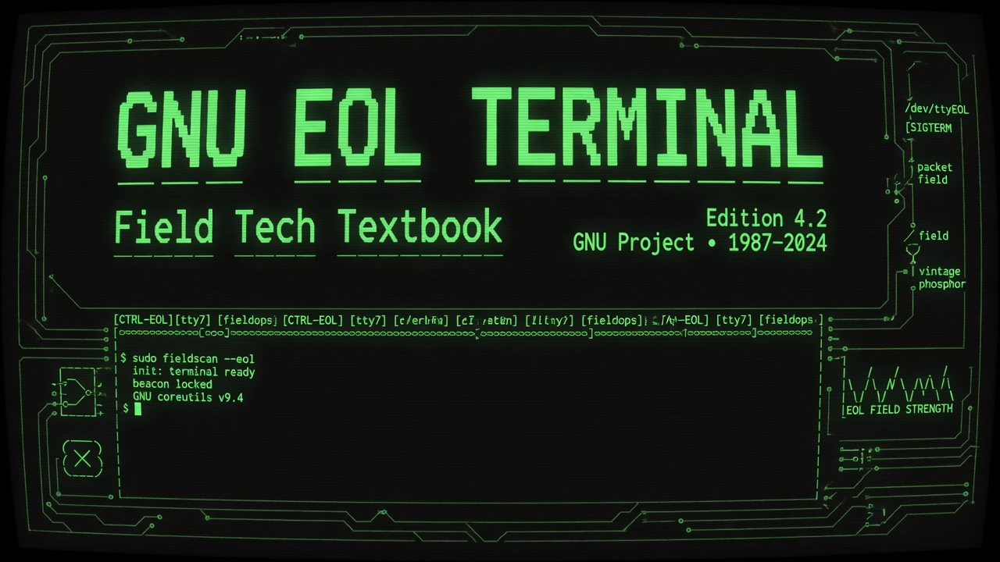

What this book is
Free software receipts — iron plate witness
This manual documents GNU EOL Terminal: shell ≡ terminal, combinatronic optional,
iron plate + plate meld security, and Hostess7 identity verification for Richard Stallman (rms @ GitHub id 10550344).
Honesty labels: ImplementedHistoryPhilosophyFunWitness. Dedication prose is Philosophy; plate meld hooks are Implemented.
Terminal spine
Shell ≡ Terminal → optional combinatronic → plate meld
queen-gnu-terminal-embed.html (shell · terminal · gnueol)
↓
/api/queen-terminal → kilroy-universal-shell + allowlist
↓
combinatorics | bash -c combinatorics → compatibility layers witness
↓
field-gnu-terminal-iron-plate.py → gnu_terminal plate
↓
field-plate-meld.py → chain-hash generation · Ironclad read-first
↓
field-gnu-identity-verify.py → rms @ 10550344 · gnu.org TLS
↓
zacharygeurts.github.io/GNUEOLTerminal · ZacharyGeurts/GNUEOLTerminal
29 chapters · index
The GNU Project — September 27, 1983
Read →04 Emacs And The Extensible Editor
Read →05 Gcc The Compiler That Freed Builds
Read →06 Gpl Social Contract
Read →07 Field Tech Literacy
Read →08 Shell Equals Terminal
Read →09 Iron Plate Doctrine
Read →10 Kilroy Universal Cli
Read →11 Queen Terminal Py
Read →12 Queen Gnu Terminal Js
Read →13 Ansi And Themes
Read →14 Dangerous Command Guard
Read →15 Universal Shell Dispatch
Read →16 Proc Kilroy Field
Read →17 Combinatronic Optional
Read →18 Plate Meld Fuse
Read →19 Compatibility Layers
Read →20 Grep Receipts
Read →21 How Rms Might Present
Read →22 Demo Script
Read →23 Conference Qna
Read →24 Video Chapter Outline
Read →25 Lie Of The Year 2026
Read →26 Liars Hall Of Fame
Read →27 Truth Bands Primer
Read →28 Classic Wiki Guide
Read →29 Command Reference
Read →30 Operator Covenant
Read →Estimated 213.0 pages · 68150 words · words÷320
